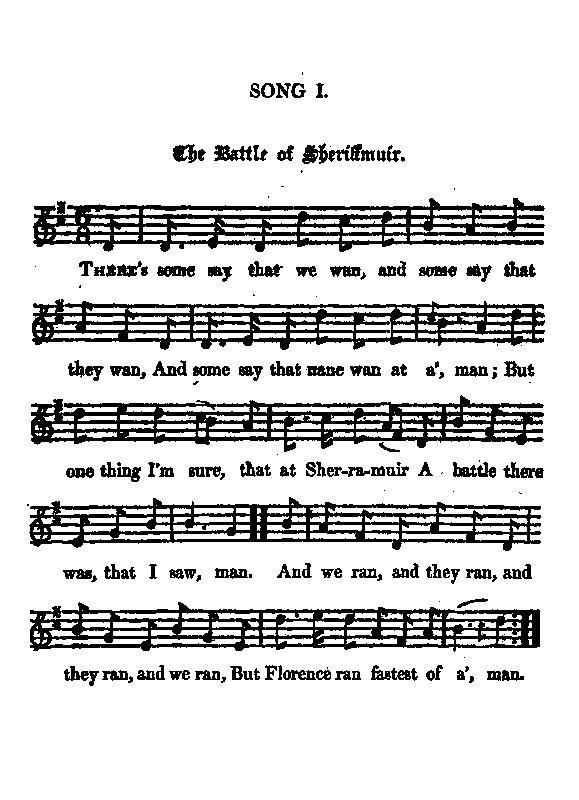
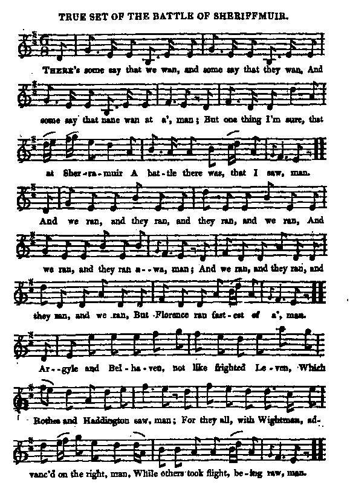

The Battle of Sheriffmuir on 13th November 1715
La bataille de Sheriffmuir, le 13 novembre 1715
David Herd's "Ancient and Modern Scottish Songs", volume 1, page 107, 1769
and James Hogg's "Jacobite Relics" Vol.2 N°1, 1821
|
SHERIFFMUIR - SHERRIFMUIR - SHERRAMOOR
Rough location map (bottom half) Map of the battle field |
Tune - Mélodie
"She's yours, she yours, she's nae mair ours" or "John Paterson's Mare"
Variant
"True set of the battle of Sheriffmuir" (sound background)
from Hogg's "Jacobite Relics" 2nd Series Vol.2, 1821, N°1
Sequenced by Christian Souchon

...
|
To the tune:
"The tune is very old. It was played at the taking away of every bride for centuries before that period, and was called, " She's yours, she yours, she's nae mair ours." Long after the existence of this name to it, but still long previous, to the battle of Sheriffmuir, it got the name of " John Paterson's Mare," from a song that was made on a wedding bruise, or horse race for the bride's napkin. Some of the old people in my parents' days always called it by its primitive name; but even with the name of " John Paterson's Mare," it was always played at the taking away of a bride even in my own time. The ballad has a great deal of merit for a composition of that day. Since writing the above note, a running copy of a part of the work having come to my hand in the country, I find that my friend Mr Stenhouse has altered this song to a paltry tune that occurs in the first volume. I have no doubt he has done it from what he supposes good authority, as I know him an enemy to all sorts of forgery or interpolation in the songs of other days. I hope he goes upon better authority than Ritson, a man who scarcely knew one tune from another, and had to apply to Mr Alexander Campbell to adapt a number of the tunes for him. All that I can say is, that I am sure for every time that any one of them has heard the song sung, I have at least heard it fifty times, and invariably to the same tune. By one man in particular, who took in a number of variations, I never heard any ballad sung in such style, and as both the song and tune have always been particular favourites of mine, I would not have them separated for the value of the book. It is evident from the rhythm that the song has been composed to that old tune; as an evidence of it I subjoin a part of one of the old songs, though not the original one: John Paterson's mare She canna be here, We nouther hae stable nor hay for her; Whip her in, whip her out, Sax shillings in a clout, Owre the kirk stile an' away wi' her. Fy whip her in, &c. The black an' the brown Ran nearest the town, But Paterson's mare she came foremost! etc..." (Follows the sheet music "True set of the Battle of Sheriffmuir" ) Source: Hogg's "Jacobite Relics", Vol.2 As for the song, in its oldest form, it consisted of of twenty-one stanzas and a chorus, in Herd's Scots Songs , 1769, volume 1, page 104, and was written immediately after the battle. The names of some of those satirized are indicated by initials. Burns ascribed it to the Rev. Murdoch McLennan, minister of Crathie . The ballad is in Hogg's Jacobite Relics have three additional stanzas by himself. Source: Source: "Complete Songs of Robert Burns Online Book" (cf. Links). |
A propos de la mélodie:
"Cette mélodie est très ancienne. On la jouait, avant 1715, lors du départ de la mariée de chez ses parents et elle s'appelait "Elle est à nous, à nous, plus à vous." Bien plus tard, mais longtemps avant la bataille de Sherrifmuir, on l'appela "La Jument de John Paterson", d'après une autre chanson sur le thème du "wedding bruise" ou course de chevaux dont l'enjeu était la serviette de la mariée. Certaines personnes agées, du temps de mes parents l'appelait par son nom d'origine, mais, même une fois rebaptisée "Jument de Paterson", on continua de la jouer au départ de la mariée, même dans ma jeunesse. La ballade a beaucoup de mérites pour une composition de cette époque. Depuis que j'ai écrit ce qui précède, j'ai eu entre les mains une partie de l'ouvrage sous forme d'épreuve définitive, et j'ai constaté que mon ami, M.Stenhouse a modifié ce chant pour l'associer à une mélodie médiocre qui figure au 1er volume. Je ne doute pas qu'il se soit appuyé pour ce faire sur des sources sûres, car je le sais ennemi des falsifications et interpolations en matière de chansons anciennes. J'espère que son informateur n'est pas Ritson, qui est à peine capable de distinguer une mélodie d'une autre et a dû faire appel à M. Alexander Campbell pour modifier à son usage un certain nombre de morceaux. Tout ce que je peux dire, c'est que toutes les fois que j'ai entendu chanter cette chanson, et je l'ai entendue cinquante fois au moins, ce fut invariablement sur cette mélodie. Je pense à un homme en particulier, qui affectionnait les variations, et que je n'ai jamais entendu chanter une ballade dans le style de celle de M.Stenhouse. Ce chant et cette mélodie sont deux éléments que j'affectionne et que j'estime indissociables. Il est évident, d'après le rythme, que les paroles sont faites pour cette ancienne mélodie,. J'en veux pour preuve cet extrait des anciennes paroles , même si ce n'est pas le texte d'origine: La jument de John Oui, de John Paterson N'aura chez nous de foin, ni d'étable. Fouettons-la, fouettons-la, Six shillings dans un drap Hors de cette église, que diable! Oui fouettons-la... Le noir et le brun N'étaient plus bien loin, Mais c'est elle qui fut la première! etc..." (suivi de la partition "Véritable mélodie de la Bataille de Sheriffmuir" ) Source: Hogg's "Jacobite Relics", Vol.2 Quant au chant, sous sa forme originale il comportait 21 couplets et un refrain dans les Chants écossais" de Herd , 1769, volume 1, page 104, et il fut rédigé juste après la bataille. Quelques noms de personnes chansonnées sont suggérés par des initiales. Burns l'attribuait au pasteur Murdoch McLennan de Crathie. La ballade figure chez Hogg avec 3 couplets supplémentaires qu'il a composés. Source: Source: "Complete Songs of Robert Burns Online Book" (cf. Links). |

|
THE BATTLE OF SHERIFFMUIR
1. There's some say that we wan, and some say that they wan, And some say that nane wan at a', man; But one thing I'm sure, that at Sherramuir A battle there was, that I saw, man. And we ran, and they ran, and they ran, and we ran, But Florence ran fastest of a', man. 2. Argyle and Belhaven, not frighted like Leven, Which Rothes and Haddington saw, man; For they all, with Wightman, advanc'd on the right, man, While others took flight, being raw, man. And we ran, &c. ... 22. So there such a race was as ne'er in that place was, And as little chace was at a', man ; From each other they run without touk of drum, They did not make use of a paw, man. And we ran, &c. 23. Whether we ran, or they ran, or we wan, or they wan, Or if there was winning at a', man, There no man can tell, save our brave Genarell, Who first began running of a', man. And we ran, &c. 24. Wi' the earl o' Seaforth , and the Cock o' the North; But Florence ran fastest of a', man, Save the laird o' Phinaven, who sware to be even W' any general or peer o' them a', man. And we ran, &c. Source: "The Jacobite Relics of Scotland, being the Songs, Airs and Legends of the Adherents to the House of Stuart" collected by James Hogg, published in Edinburgh by William Blackwood in 1819 and 1821. |
LA BATAILLE DE SHERIFFMUIR
1. Certains disent "c'est nous" D'autres disent "c'est eux", Qui ont remporté la victoire". Mais ce que je tiens pour sûr, C'est qu'à Sherramoor J'ai vu livrer une bataille. Et je cours et il court Et il court et je cours Mais la plus rapide est Florence! 2. Argyll et Belhaven, Ont moins peur que Leven, Rothes et Haddington le disent, Car ils firent mouvement, A droite avec Wightman, Tandis que fuyaient les novices, Et je cours, etc. ... 22. Course mémorable, Ces lieux vénérables N'en virent jamais de semblable; Où l'un l'autre on s'effare Sans bruit ni fanfare Sans que les poings frappent la table . Et je cours, etc. 23. Qui de nous a couru Devant l'autre? Qui fut Vainqueur, si même il en existe? Nul ne peut le dire Sauf notre chef, au pire, Lui qui le premier prit la fuite. Et je cours, etc. 24. La fuite avec Seaforth, Avec le Coq du Nord; Mais Florence est la plus véloce. Si ce n'est Phinaven Lequel jure qu'il sème Généraux et pairs en carrosse. Et je cours, etc. (Trad. Christian Souchon(c)2010) |
|
This 24 verse strong ballad was contributed to Hogg by a certain Mr Moir with notes on the countless characters featuring in it which he "seems to have taken them from different sources".
Suffice it to say that: Argyle was, of course, John Campbell, 2nd Duke of Argyll and Duke of Greenwich, commander-in-chief of the government forces at Sheriffmuir. He died in 1743. Bellhaven was John Hamilton, lord Belhaven had the command of a troop of horse raised by the county of Haddington. He died in 1821. Leven was David earl of Leven who fought for the government. Rothes was John Leslie, earl of Rothes, commander of the horse volunteers for the government. Haddington was Thomas Hamilton, earl of Haddington who served as volunteer for the government. Wightman was Major-general Joseph Wightman. Seaforth was William McKenzie, 5th earl of Seaforth who was attainted. He died in 1740. The Cock of the North is an honorary title of the dukes of Gordon. However, ha was not present at Sheriffmuir, being confined on his parole to Edinburgh . Florence was the marquis of Huntly's horse. Huntly was Alexander, marquis of Huntly, afterwards second duke of Gordon. He attended the Hunting party at Braemar in August and joined the earl of Mar at Perth in October. He was imprisoned in Edinburgh Castle in April 1716, but as he adhered to Hanover no proceedings were instituted against him. and Phinaven the Carnegie who deserted the Jacobite party, "a defection for which he is commemorated in "He winna be guided by me ". |
Ce chant long de 24 couplets fut communiqué à Hogg par un certain Mr Moir, accompagné de notes sur tous les innombrables personnages qui y figurent, notes qu'il"semble avoir puisées à des sources diverses."
Disons seulement que: Argyle est, on le sait, John Campbell, 2ème duc d'Argyll et duc de Greenwich, commandant-en-chef des troupes gouvernementales à Sheriffmuir. Mort en1743. Bellhaven est John Hamilton, lord Belhaven, qui commandait un régiment de cavalerie constitué dans le comté de Haddington. Mort en 1821. Leven est David, comte de Leven qui combatit pour Hanovre. Rothes est John Leslie, comte de Rothes, commandant les cavaliers volontaires des troupes gouvernementales. Haddington est Thomas Hamilton, comte de Haddington qui servit en tant que volontaire dans les toupes gouvernementales. Wightman est le général-major Joseph Wightman. Seaforth est William McKenzie, 5ème comte de Seaforth qui fut déchu de ses droits. Mort en 1740. Le Coq du Nord est un titre honorifique porté par les ducs de Gordon. Cependant le duc de l'époque n'était pas à Sheriffmuir, mais retenu sur parole à Edimbourg. Florence était le cheval du marquis de Huntly. Huntly est Alexander, marquis de Huntly, qui devint ensuite le second duc de Gordon. Il était présent à la partie de chasse de Braemar en août 1715 et rejoignit le comte de Mar à Perth en octobre. Il fut emprisonné au château d'Edimbourg en avril 1716, mais, s'étant rallié à Hanovre, il cessa d'être inquiété. Phinaven est le Carnegie qui déserta le party Jacobite, ce qui lui valut d'être immortalisé dans "He winna be guided by me " |
|
|
|